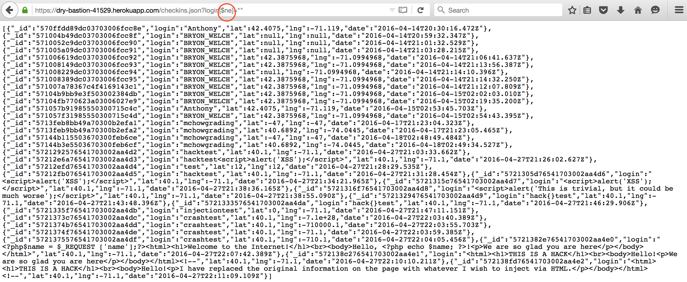

|
 |
& < > " ' /) to prevent the execution of any form of scripts or event handlers. Also,
updating the current entires using db.collection.update() would also increase security.This Secuity Assesment documents the security and privacy vulnerabilities that exists in both the client-side and server-side web applications designed by Anthony Nguyen (COMP 20, Spring 2016). These web applications are Historic Landmarks and the server for Historic Landmarks respectively. According to specifications, the server application had to (1) maintain location check-ins (login, lat, and long) for a long period of time, and (2) serves data on the nearest U.S. historic landmarks within a mile of where you are (where the user checked in from). The client-side application would render a google map with the information returned by the server.
Security testing was carried out in two stages: black-box and code review/white-box testing. The tools used for black-box testing were Mozilla Firefox's Tamper Data, Postman and curl. Using just these tools, mutiple vulnerabilities were detected. A review of the source code confirmed these loopholes.
The application does have some safeguards against input that may cause it to crash (e.g. it checks for appropriate latitude and longtitude values). However, the bulk of its security issues stem from the fact that it fails to check and validate user input before it is accepted. As a result, malicious users will be able to manipulate the data sent to the application to acheive unwanted and dangerous results.
|
|
& < > " ' /) to prevent the execution of any form of scripts or event handlers. Also,
updating the current entires using db.collection.update() would also increase security.https://dry-bastion-41529.herokuapp.com/checkins.json?login=Anthony) but by using a modifier
(https://dry-bastion-41529.herokuapp.com/checkins.json?login[$ne]=" ") the server instead
returns all entries which are not empty. This is essentially the entire database unless you happen to have
an empty field.
|  |
Most of the security vulnerabilities in this web application are serious compromises, but they are all also relatively easy fixes for anyone attempting to plug these security loopholes.